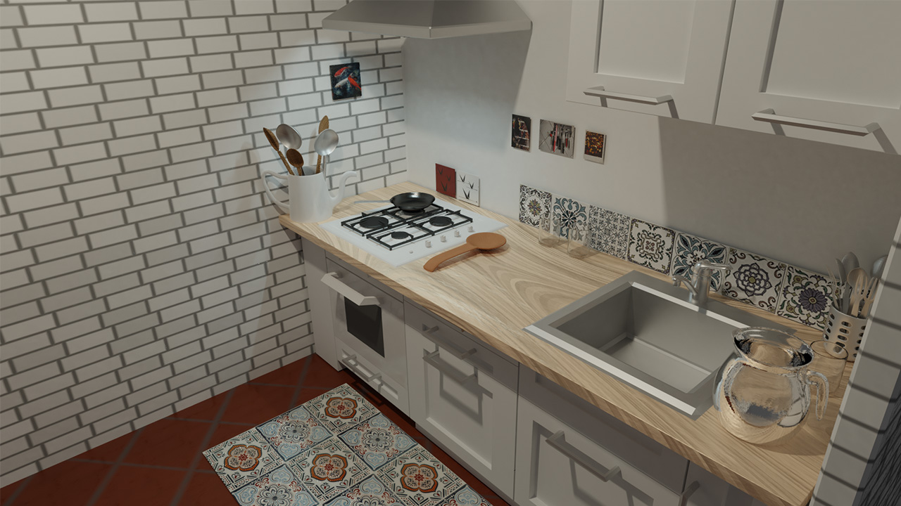

Università & 3D
Il mio percorso accademico si è focalizzato intensamente sullo studio dello spazio tridimensionale e sull'approfondimento delle tecniche di modellazione 3D. In questo ambiente di ricerca ho sviluppato la capacità di gestire flussi di lavoro digitali complessi, imparando a padroneggiare la volumetria, la gestione delle mesh e l'illuminazione per tradurre concept astratti in asset virtuali precisi e funzionali.

Cortometraggi
Esplorazioni registiche e narrative attraverso il mezzo cinematografico digitale. Questa sezione raccoglie le mie produzioni video in cui ho curato autonomamente la direzione artistica, la composizione delle inquadrature e il montaggio, sperimentando sul ritmo visivo per dare vita a racconti immersivi e d'atmosfera.
Concept Fotografico: Diversità
Un progetto visivo strutturato attorno al tema della diversità e presentato sotto forma di concorso fotografico concettuale. L'opera si basa su un'illusione ottica geometrica realizzata senza l'ausilio di rendering automatici: combinando due scatti statici catturati dalla medesima identica angolazione, un posizionamento millimetrico dello specchio e una successiva fusione digitale in Photoshop, ho generato una distorsione della realtà in cui il pezzo degli scacchi riflesso muta la propria natura rispetto all'originale, sfidando la percezione dell'osservatore.